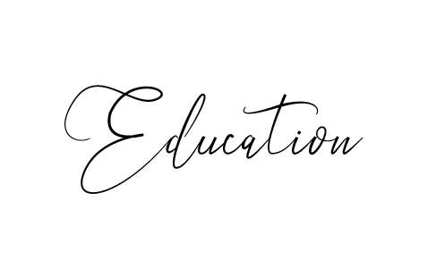
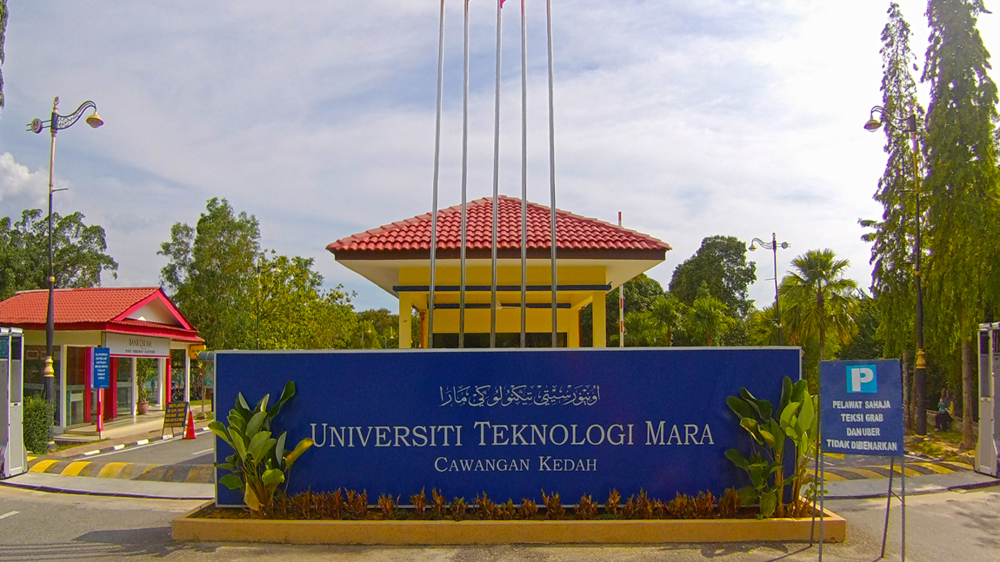

| HOME | BIODATA | EXPERIENCE | EDUCATION | FAMILY | FAVOURITE | GALLERY | CONTACT |
|---|

"Education is what remains after one has forgotten what one has learned in school" - Albert Einstein
| Primary School | Secondary School | University |

Sekolah Kebangsaan Saujana Utama
This is my one and only primary school that i went to since I'm in standard 1 until I'm in standard 12. This school has become a memoriable place to me since it was the place where everything started. I get to know the "real school environment" from here. I still remember during I'm in my primary school, I was a prefect since I'm in standard 3 until standard 6. It was a great memory that I have experienced in my entire life. 6 Cekal. That was my class's name when I was in standard 6. The class's teacher is Mr. Nazari at that time and he is fierced person as he is the dicipline's teacher yet he is so kind hearted . There were nobody in the class that haven't get cane by him. Hahaha, tragic. However, because of his sincere heart in teaching, my classmates and I being more focused on our study and I get flying colours for my UPSR examination! :) |

Sekolah Menengah Kebangsaan Saujana Utama
And here is my one and only secondary school that I went until I graduated from school. I really really love my high school because all the teachers and friends in this school are very soft and kind to me. This school was located next to my primary school and we actually share the same school field. SMK Saujana Utama is a very big school with a huge amount of students. I really had a great experience to be in this school as I'm very active student during my highschool year. I get participated in so many school activities and I also joined school camping! It was very tiring yet so fun!
|

Universiti Teknologi MARA, Kedah
So it is the end of my school life. I get the chance to further my study in Diploma in Library Management at UiTM Kedah. At first, I'm very scared to further my studies to the University as I will stay away from home and my lovely family. However, I managed to overcome the fear and I started to feel excited to continue my studies. At this university, I have learned so many new things that can help me in improving my skills. I also learned to dicipline myself and to be independent. University's life really help me in building my confidence plus all the lecturers also are very kind and helpful. They always help me by teach me on how to be confident in presentation, how to find information and always offer me ideas and advices. There are many facilities and services that are provided for the students here. I'm very glad to be one of the student of UiTM Kedah. I can not wait to finished my studies and start working so that one day, I get the chance to contribute back to this University. |